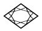

第十七章牛顿和爱因斯坦对我讲述有关曼哈顿工程的故事深感兴趣。我首先介绍了这一工程的起因。第二次世界大战爆发后不久，该计划就在少数顶尖的物理学家和一些有影响力的华盛顿军界人士的头脑中成型了。我简要描述了J·罗伯特·奥本海默（J. Robert Oppenheimer）的生平。这个才华横溢的年轻物理学家后来成为曼哈顿工程的领导者。该工程在新墨西哥州的高海拔台地洛斯阿拉莫斯达到了巅峰。曼哈顿工程的目标是在尽可能短的时间内制造出几枚原子弹。主要的困难在于获得可裂变的原料，这只能经过复杂的步骤从铀里面提取。只有到了欧洲战事结束之后，进行第一次试爆才最终成为可能，地点在新墨西哥沙漠。
Jornada del Muerto，“一天的死亡之旅”，是400年前西班牙征服者给如今坐落在新墨西哥州索科罗城南部的一片不毛之地取的名字。这个名字恰如其分，因为该地区是沙漠中特别干燥而且地势险恶的部分。就在这儿，离阿拉莫戈多不远，奥本海默选择了第一次试爆发生的地点。它的位置将以“复活之日”（Trinity）的名义载入史册。
机械师建起了一座30米高的钢铁支撑塔，从而使核弹的弹头可以在地面上空引爆。这样，爆炸点下面的弹坑将会最小，而且不会有巨大的尘埃形成的蘑菇云升入天空。
试验是在1945年7月16日进行的。设备的装配几天前就开始了。弹头的重要部分是一个复杂的机械装置，它允许可裂变原料被常规爆炸引爆后能十分迅速地内爆。
7月16日清晨5点之后，奥本海默和曼哈顿工程的军方指挥官格罗夫斯将军（General Groves）就位于他们的观察掩体。不久以后，爆炸装置开始点火，而那就是核时代的开端。物理学家弗里施（Otto Robert Frisch）是这样描述爆炸的头几秒钟的：
于是爆炸看起来如同太阳闪耀，没有任何声音。沙漠边际的沙丘闪着十分明亮的光，几乎无形无色。光芒有好几秒钟似乎不变，然后开始黯淡下来。我转过头来，但是地平线上那个看起来像个小太阳的物体依旧太明亮了，不能直视。我不停地眨眼，试图看上几眼。大约又过了几秒钟，它增大并变暗了，更像一团巨大的石油火焰，其结构看起来有点像颗草莓。它缓慢地从地面升入天空，天地之间旋转的尘埃柱越拉越长。我不合时宜地想起一头炽热的大象以它的鼻子做支撑平衡地立在那儿。然后，当炽热的气体云冷下来并变得不那么红的时候，人们可以看见环绕着它的蓝色光辉，电离了的空气的光辉……那是一个可怕的景象；任何曾经目睹原子弹爆炸的人都不会忘记那一幕。然后是一片死寂；几分钟后突然传来巨响，声音相当大，尽管我已经把耳朵塞起来了，接着传来一阵阵隆隆声，好像很远处繁忙运输的声音。我依然可以听到它。 7
奥本海默后来回忆这一非凡的时刻：“少数人笑，少数人哭，大多数人沉默着。我的心中掠过《薄伽梵歌》（Bhagavad Gita ）中的诗句，其中黑天（Krishna）试图劝导王子应该尽自己的义务：‘我成了死神，毁灭世界的人’。” 8
除了用作试验的装置，在洛斯阿拉莫斯还制造了另外两颗原子弹。第一颗原子弹按照杜鲁门总统（President Harry Truman）的命令于1945年8月6日投到了日本的港口城市广岛。3天之后，第二颗在长崎上空引爆。两枚炸弹杀死的人数超过10万。
这样我的叙述就结束了。牛顿已经闭上了眼睛。爱因斯坦凝视着火焰。不久以后，我听到他重复说：“现在我是死神，整个世界的毁灭者。”
牛顿 （把手放在爱因斯坦的肩上）：爱因斯坦，不要灰心。洛斯阿拉莫斯的那批物理学家并没有发明核燃烧，他们所做的一切就是把它从太阳拖曳到地球上来。它迟早会发生，那只是个时间问题。我愿意打赌，在宇宙的任何角落发展起来的任何文明社会都会在某一时期有能力做同样的事并采取相应的行动。当然，至于这种能源是否用来制造炸弹是另外一个问题。并非物理学家，而是政治家和把他们选举出来的人将最终回答这个问题。
哈勒尔： 我应该提及，涉及制造第一枚原子弹的大多数物理学家投票赞同在一个无人居住的地带上空引爆炸弹。它会起到炫耀武力、警告敌人的作用。是政治家做了不同的决定，与科学家的建议相悖。让我引用一封信，是你——爱因斯坦先生——在1950年写的：“我从未参加任何军事或技术类的事业，我从未做任何旨在制造原子弹的研究。我对整个这件事的唯一贡献是我在1905年确定了质能关系。这是个纯物理的东西。它是很一般的物理规律，而它与军事应用的潜在联系离我的思想远得不能再远了。”
爱因斯坦： 毫无疑问，我始终是一个和平主义者。我决不为制造炸弹而工作。艾萨克爵士，我同意你的观点——一个发展中的文明社会将会发现开发核裂变和核聚变的可能性，这只是个时间问题。但是我也问问你：那个文明社会，或者我们这个处在地球上的人类文明，能够与这种知识共存吗？或者它最终将屈服于不断的诱惑而去摆弄核燃烧？
哈勒尔 （代替牛顿回答）：没有人知道我们最后是否能够顶住那种诱惑。也许宇宙中每个文明社会的命运最后都是利用同一种核燃烧，首先来维持生命。不过再说一遍，我们也许将成功地避免核地狱，从而确保我们的星球存活下来。爱因斯坦，没有人知道你的问题的答案。然而，有一件事是确定无疑的：在1945年的关键时刻，当第一次核爆炸发生时，一个新时代就开始了——其中军事冲突在拥有核武器的国家之间不再被认为是解决分歧的实际手段。所以我把制造核武器看作以不同于战争的方式解决冲突的一个挑战。我相当乐观，这种局面会出现的。
爱因斯坦 （仰起头望着天花板）：哈勒尔，你真的相信那些话吗？你真的以为一个国家的领导人当危险迫在眉睫的时候愿意放弃使用核武器吗？你一定是个地地道道的乐观主义者。你也许是对的。我当然希望如此。
今晚我弄清了一件事：我在伯尔尼专利局工作时所发现的质量和能量的等价性在把原子核所固有的能量释放出来的过程中扮演了应有的角色，而在这个意义上，我的方程或许已经改变了世界。方程没有改变的是我们的思维方式和我们解决冲突的方法。我想我们需要一种新思路，使得人类不被核武力毁灭。然而，这种新思路如果不从那些把热核燃烧带到地球上的人们——物理学家以及其他领域的科学家和技术人员——那里开始的话，那应该从何处开始呢？哈勒尔，我的确认为历史已经把沉重的责任赋予你和你的同事们了。
哈勒尔： 曼哈顿工程结束之后，奥本海默离开了洛斯阿拉莫斯。在为他安排的送别仪式上，他做了一个简短的演说，结尾有下面几句话：
如果原子弹作为新式武器加入到一个敌对的世界的武器库中，或者加入到准备战争的国家的武器库中，那么人类诅咒洛斯阿拉莫斯和广岛的名字的时代将会到来。全世界人民必须团结起来，否则他们将走向灭亡。给地球造成这么多创伤的第二次世界大战已经表明了这一点，原子弹已经清楚地说明了这一点，所有的人都会明白。其他人在其他场合谈到其他战争和其他武器时也说出了这些话。这样的意见还没有占上风。有些被人类历史的错觉所误导的人提醒我们，上述意见现在还不会占上风。对上述警告相信与否并非我们的事。面临共同的危险，我们以自己的工作在法律上并在人道主义上去致力于世界大同。 9
今天我们必须竭尽全力来保证我们这个星球不会由于我们自身的缺陷和愚蠢而被辐射毁灭。我抱有与奥本海默同样的见解，包括对危险的见解。后者或许可以战胜危险。
尽管如此，问题依然存在：我们的知识足够多了吗？对大多数人来说，爱因斯坦的方程并非描述了自然界的奥妙，我们之所以存在的奥妙。它被当作物理学家所发明的不可思议的公式，如同原子弹和氢弹——某种我们无法摆脱、令人担惊受怕的东西。但是恐惧并非好事。
我们也必须澄清在上下文中知识指的是什么。我们必须区别才智（intelligence）和理智（reason）。我们的才智使得我们根据世界自身的不以人的意志为转移的规律来观察世界。在才智的帮助下，我们已经建立了科学知识的推理体系，它显然可以不受限制地永远发展下去，它也不再一目了然。
另一方面，理智使得我们设定必要的限制，不应被逾越的限制。理智可以规范人类，包括他们的缺陷和局限。它不受限于冷冰冰的、讲究推理的科学知识领域。后者没有自我衡量的功能。理智最终会占上风吗？我不知道，也没有人知道。
爱因斯坦站起身来，仰望着星空。银河伸展着带状的身姿，横跨苍穹。他转向牛顿。
爱因斯坦： 艾萨克爵士，这是怎样的一个晚上啊！你在剑桥的时候以及我在青年时代都想知道为什么那些星星会闪闪发光。作为一个孩子，我多少次爬到我们在慕尼黑的家的顶楼去看星星，并且就问自己那个问题。现在我们知道为什么恒星和星系照亮了黑暗的宇宙，以及为什么太阳光温暖了地球。当我1905年在伯尔尼为《物理学年刊》写那3页纸（那3页包含了我的方程E=mc 2 的纸）时，我从未梦想过我或许已经发现了那打开藏在星星中的无穷无尽的能源宝库的钥匙。我也没想到这个方程会与核物理学的方程一道最终创建了新式武器的理论基础，而那些武器潜在的破坏力比曾经发明的任何东西都更致命。
物理学的发展总是如此：我们建立起理论，起初并不特别当真。在我写出我的方程之际，没有人能够设想到这些后果——我不能，柏林的普朗克和慕尼黑的索末菲（Arnold Sommerfeld）也不能。现实赶上并超过了我们。我认为，我们不仅应该重视而且应该比以往更重视我们的理论。此外，我们应该永远记住，我们的知识并非只是为了我们自己，而必须充分地、如实地告知公众。科学是一项严肃的事业，严肃得不能只留给科学家来处理。